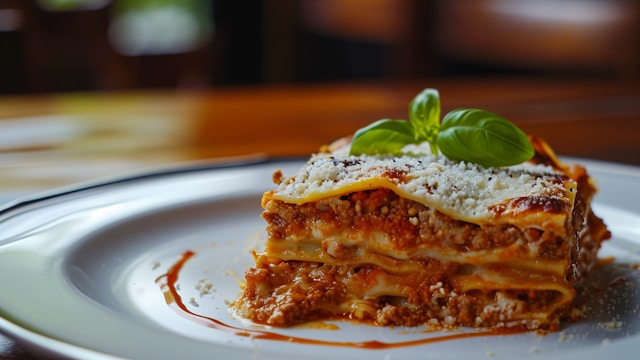

Lasagna

Classic Italian Lasagna
Layered to perfection, this classic Italian lasagna features rich meat sauce, creamy cheese, and a touch of fresh basil.
Ingredients:
- 500g ground beef
- 1 onion, chopped
- 3 garlic cloves, minced
- 2 cups tomato sauce
- 2 tbsp tomato paste
- 1 tsp salt
- 1/2 tsp black pepper
- 1 tsp oregano
- A few fresh basil leaves
- 1 cup ricotta cheese
- 2 cups mozzarella cheese, shredded
- 1/2 cup parmesan cheese
- 1 egg
- 9 lasagna sheets
- 2 tbsp olive oil
Steps
- Heat olive oil in a pan and cook onions until soft.
- Add garlic and ground beef. Cook until browned.
- Stir in tomato sauce, tomato paste, salt, pepper, and oregano.
- Simmer for 15-20 minutes.
- In a bowl, mix ricotta, egg, and half the mozzarella.
- Boil lasagna sheets if required by the package.
- In a baking dish, layer: meat sauce, lasagna sheets, and cheese mixture.
- Repeat until full.
- Top with remaining mozzarella and parmesan.
- Bake at 180°C (350°F) for about 35-40 minutes.
- Garnish with fresh basil and let rest for 10 minutes before serving.
Home